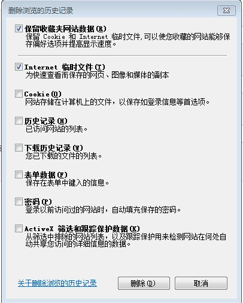
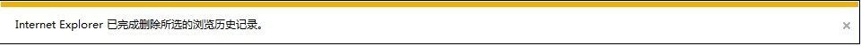

返回
系统异常问题建议措施
目录
系统常见问题建议措施
系统常见问题建议措施
1 请使用IE7或更高版本的IE浏览器
2 请确认使用的PDF阅读器为Adobe Reader。本系统只支持IE下的Adobe操作,建议Adobe版本为10.1.0或最新版本。
下载Adobe Reader 10.1.0
3 请尝试清空浏览器缓存，以确保当前系统为最新版本。操作步骤如下：
1) 点击系统退出按钮如图1，退出到系统登录界面
图1
2) 按Ctrl+Shift+Del，弹出如图2对话框，勾选前两项（保留收藏夹网站数据、Internet临时文件），点击删除。直至几秒后浏览器下方弹出图3对话框，表明清除动作已完成。

图2

图3
3) 按Ctrl+R，强制刷新页面
4) 关闭IE浏览器并重新启动浏览器登录系统即可.